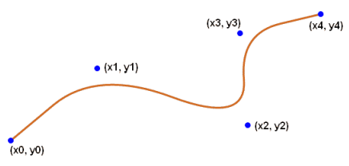

|
|
Version: 3.3.1 |
#include <wx/dc.h>
 Inheritance diagram for wxDC:
Inheritance diagram for wxDC:Detailed Description
A wxDC is a "device context" onto which graphics and text can be drawn.
It is intended to represent different output devices and offers a common abstract API for drawing on any of them.
wxDC also provides functions for coordinate transformation and computing text metrics and extends that are inherited from its base class wxReadOnlyDC.
wxWidgets offers an alternative drawing API based on the modern drawing backends GDI+, CoreGraphics, Cairo and Direct2D. See wxGraphicsContext, wxGraphicsRenderer and related classes. There is also a wxGCDC linking the APIs by offering the wxDC API on top of a wxGraphicsContext.
wxDC is an abstract base class and cannot be created directly. Use wxPaintDC for drawing on screen, wxMemoryDC for off-screen drawing or wxPrinterDC for printing (the remaining drawing contexts wxClientDC, wxWindowDC and wxScreenDC are deprecated and don't work on all platforms any longer). Notice that wxPaintDC uses the window font and colours by default (starting with wxWidgets 2.9.0) but the other device context classes use system-default values so you always must set the appropriate fonts and colours before using them.
In addition to the classes listed above, you can use wxInfoDC which can only provide information about the device context but not draw on it. This class is useful when you need a device context associated with a window outside of the paint event handler, i.e. when wxPaintDC can't be used.
In addition to the versions of the methods documented below, there are also versions which accept single wxPoint parameter instead of the two wxCoord ones or wxPoint and wxSize instead of the four wxCoord parameters.
Beginning with wxWidgets 2.9.0 the entire wxDC code has been reorganized. All platform dependent code (actually all drawing code) has been moved into backend classes which derive from a common wxDCImpl class. The user-visible classes such as wxClientDC and wxPaintDC merely forward all calls to the backend implementation.
In wxWidgets 3.3.0 the new wxReadOnlyDC class was extracted from wxDC: it contains all the functions that don't actually draw on the device context, but just return information about it. This class should be rarely used directly, but some function that used to take wxDC argument but didn't need to modify it, now accept wxReadOnlyDC instead to make this fact explicit, and such functions can now also be called with wxInfoDC objects as arguments.
Device and logical units
In the wxDC context there is a distinction between logical units and device units.
Device units are the units native to the particular device; e.g. for a screen, a device unit is a pixel. For a printer, the device unit is defined by the resolution of the printer (usually given in DPI: dot-per-inch).
All wxDC functions use instead logical units, unless where explicitly stated. Logical units are arbitrary units mapped to device units using the current mapping mode (see wxDC::SetMapMode).
This mechanism allows reusing the same code which prints on e.g. a window on the screen to print on e.g. a paper.
Support for Transparency / Alpha Channel
In general wxDC methods don't support alpha transparency and the alpha component of wxColour is simply ignored and you need to use wxGraphicsContext for full transparency support. There are, however, a few exceptions: first, under macOS and GTK+ 3 colours with alpha channel are supported in all the normal wxDC-derived classes as they use wxGraphicsContext internally. Second, under all platforms wxSVGFileDC also fully supports alpha channel. In both of these cases the instances of wxPen or wxBrush that are built from wxColour use the colour's alpha values when stroking or filling.
Support for Transformation Matrix
On some platforms (currently under MSW, GTK+ 3, macOS) wxDC has support for applying an arbitrary affine transformation matrix to its coordinate system (since 3.1.1 this feature is also supported by wxGCDC in all ports). Call CanUseTransformMatrix() to check if this support is available and then call SetTransformMatrix() if it is. If the transformation matrix is not supported, SetTransformMatrix() always simply returns false and doesn't do anything.
This feature is only available when wxUSE_DC_TRANSFORM_MATRIX build option is enabled.
- See also
- Device Contexts, wxGraphicsContext, wxDCFontChanger, wxDCTextColourChanger, wxDCPenChanger, wxDCBrushChanger, wxDCClipper
- Todo:
Precise definition of default/initial state.
Pixelwise definition of operations (e.g. last point of a line not drawn).
Public Member Functions | |
| wxRasterOperationMode | GetLogicalFunction () const |
| Gets the current logical function. More... | |
| bool | GetPixel (wxCoord x, wxCoord y, wxColour *colour) const |
| Gets in colour the colour at the specified location. More... | |
| void | SetLogicalFunction (wxRasterOperationMode function) |
| Sets the current logical function for the device context. More... | |
| void | SetPalette (const wxPalette &palette) |
| If this is a window DC or memory DC, assigns the given palette to the window or bitmap associated with the DC. More... | |
| void | CopyAttributes (const wxDC &dc) |
| Copy attributes from another DC. More... | |
| void * | GetHandle () const |
| Returns a value that can be used as a handle to the native drawing context, if this wxDC has something that could be thought of in that way. More... | |
| wxBitmap | GetAsBitmap (const wxRect *subrect=nullptr) const |
| If supported by the platform and the type of DC, fetch the contents of the DC, or a subset of it, as a bitmap. More... | |
| virtual wxGraphicsContext * | GetGraphicsContext () const |
| If supported by the platform and the wxDC implementation, this method will return the wxGraphicsContext associated with the DC. More... | |
| virtual void | SetGraphicsContext (wxGraphicsContext *ctx) |
| Associate a wxGraphicsContext with the DC. More... | |
Drawing functions | |
| void | Clear () |
| Clears the device context using the current background brush. More... | |
| void | DrawArc (wxCoord xStart, wxCoord yStart, wxCoord xEnd, wxCoord yEnd, wxCoord xc, wxCoord yc) |
| Draws an arc from the given start to the given end point. More... | |
| void | DrawArc (const wxPoint &ptStart, const wxPoint &ptEnd, const wxPoint ¢re) |
| This is an overloaded member function, provided for convenience. It differs from the above function only in what argument(s) it accepts. More... | |
| void | DrawBitmap (const wxBitmap &bitmap, wxCoord x, wxCoord y, bool useMask=false) |
| Draw a bitmap on the device context at the specified point. More... | |
| void | DrawBitmap (const wxBitmap &bmp, const wxPoint &pt, bool useMask=false) |
| This is an overloaded member function, provided for convenience. It differs from the above function only in what argument(s) it accepts. More... | |
| void | DrawCheckMark (wxCoord x, wxCoord y, wxCoord width, wxCoord height) |
| Draws a check mark inside the given rectangle. More... | |
| void | DrawCheckMark (const wxRect &rect) |
| This is an overloaded member function, provided for convenience. It differs from the above function only in what argument(s) it accepts. More... | |
| void | DrawCircle (wxCoord x, wxCoord y, wxCoord radius) |
| Draws a circle with the given centre and radius. More... | |
| void | DrawCircle (const wxPoint &pt, wxCoord radius) |
| This is an overloaded member function, provided for convenience. It differs from the above function only in what argument(s) it accepts. More... | |
| void | DrawEllipse (wxCoord x, wxCoord y, wxCoord width, wxCoord height) |
| Draws an ellipse contained in the rectangle specified either with the given top left corner and the given size or directly. More... | |
| void | DrawEllipse (const wxPoint &pt, const wxSize &size) |
| This is an overloaded member function, provided for convenience. It differs from the above function only in what argument(s) it accepts. More... | |
| void | DrawEllipse (const wxRect &rect) |
| This is an overloaded member function, provided for convenience. It differs from the above function only in what argument(s) it accepts. More... | |
| void | DrawEllipticArc (wxCoord x, wxCoord y, wxCoord width, wxCoord height, double start, double end) |
| Draws an arc of an ellipse. More... | |
| void | DrawEllipticArc (const wxPoint &pt, const wxSize &sz, double sa, double ea) |
| This is an overloaded member function, provided for convenience. It differs from the above function only in what argument(s) it accepts. More... | |
| void | DrawIcon (const wxIcon &icon, wxCoord x, wxCoord y) |
| Draw an icon on the display (does nothing if the device context is PostScript). More... | |
| void | DrawIcon (const wxIcon &icon, const wxPoint &pt) |
| This is an overloaded member function, provided for convenience. It differs from the above function only in what argument(s) it accepts. More... | |
| void | DrawLabel (const wxString &text, const wxBitmap &bitmap, const wxRect &rect, int alignment=wxALIGN_LEFT|wxALIGN_TOP, int indexAccel=-1, wxRect *rectBounding=nullptr) |
| Draw optional bitmap and the text into the given rectangle and aligns it as specified by alignment parameter; it also will emphasize the character with the given index if it is != -1 and return the bounding rectangle if required. More... | |
| void | DrawLabel (const wxString &text, const wxRect &rect, int alignment=wxALIGN_LEFT|wxALIGN_TOP, int indexAccel=-1) |
| This is an overloaded member function, provided for convenience. It differs from the above function only in what argument(s) it accepts. More... | |
| void | DrawLine (wxCoord x1, wxCoord y1, wxCoord x2, wxCoord y2) |
| Draws a line from the first point to the second. More... | |
| void | DrawLine (const wxPoint &pt1, const wxPoint &pt2) |
| This is an overloaded member function, provided for convenience. It differs from the above function only in what argument(s) it accepts. More... | |
| void | DrawLines (int n, const wxPoint points[], wxCoord xoffset=0, wxCoord yoffset=0) |
| Draws lines using an array of points of size n adding the optional offset coordinate. More... | |
| void | DrawLines (const wxPointList *points, wxCoord xoffset=0, wxCoord yoffset=0) |
| This method uses a list of wxPoints, adding the optional offset coordinate. More... | |
| void | DrawPoint (wxCoord x, wxCoord y) |
| Draws a point using the color of the current pen. More... | |
| void | DrawPoint (const wxPoint &pt) |
| This is an overloaded member function, provided for convenience. It differs from the above function only in what argument(s) it accepts. More... | |
| void | DrawPolygon (int n, const wxPoint points[], wxCoord xoffset=0, wxCoord yoffset=0, wxPolygonFillMode fill_style=wxODDEVEN_RULE) |
| Draws a filled polygon using an array of points of size n, adding the optional offset coordinate. More... | |
| void | DrawPolygon (const wxPointList *points, wxCoord xoffset=0, wxCoord yoffset=0, wxPolygonFillMode fill_style=wxODDEVEN_RULE) |
| This method draws a filled polygon using a list of wxPoints, adding the optional offset coordinate. More... | |
| void | DrawPolyPolygon (int n, const int count[], const wxPoint points[], wxCoord xoffset=0, wxCoord yoffset=0, wxPolygonFillMode fill_style=wxODDEVEN_RULE) |
| Draws two or more filled polygons using an array of points, adding the optional offset coordinates. More... | |
| void | DrawRectangle (wxCoord x, wxCoord y, wxCoord width, wxCoord height) |
| Draws a rectangle with the given corner coordinate and size. More... | |
| void | DrawRectangle (const wxPoint &pt, const wxSize &sz) |
| This is an overloaded member function, provided for convenience. It differs from the above function only in what argument(s) it accepts. More... | |
| void | DrawRectangle (const wxRect &rect) |
| This is an overloaded member function, provided for convenience. It differs from the above function only in what argument(s) it accepts. More... | |
| void | DrawRotatedText (const wxString &text, wxCoord x, wxCoord y, double angle) |
| Draws the text rotated by angle degrees (positive angles are counterclockwise; the full angle is 360 degrees). More... | |
| void | DrawRotatedText (const wxString &text, const wxPoint &point, double angle) |
| This is an overloaded member function, provided for convenience. It differs from the above function only in what argument(s) it accepts. More... | |
| void | DrawRoundedRectangle (wxCoord x, wxCoord y, wxCoord width, wxCoord height, double radius) |
| Draws a rectangle with the given top left corner, and with the given size. More... | |
| void | DrawRoundedRectangle (const wxPoint &pt, const wxSize &sz, double radius) |
| This is an overloaded member function, provided for convenience. It differs from the above function only in what argument(s) it accepts. More... | |
| void | DrawRoundedRectangle (const wxRect &rect, double radius) |
| This is an overloaded member function, provided for convenience. It differs from the above function only in what argument(s) it accepts. More... | |
| void | DrawSpline (int n, const wxPoint points[]) |
| Draws a spline between all given points using the current pen. More... | |
| void | DrawSpline (const wxPointList *points) |
| This is an overloaded member function, provided for convenience. It differs from the above function only in what argument(s) it accepts. More... | |
| void | DrawSpline (wxCoord x1, wxCoord y1, wxCoord x2, wxCoord y2, wxCoord x3, wxCoord y3) |
| This is an overloaded member function, provided for convenience. It differs from the above function only in what argument(s) it accepts. More... | |
| void | DrawText (const wxString &text, wxCoord x, wxCoord y) |
| Draws a text string at the specified point, using the current text font, and the current text foreground and background colours. More... | |
| void | DrawText (const wxString &text, const wxPoint &pt) |
| This is an overloaded member function, provided for convenience. It differs from the above function only in what argument(s) it accepts. More... | |
| void | GradientFillConcentric (const wxRect &rect, const wxColour &initialColour, const wxColour &destColour) |
| Fill the area specified by rect with a radial gradient, starting from initialColour at the centre of the circle and fading to destColour on the circle outside. More... | |
| void | GradientFillConcentric (const wxRect &rect, const wxColour &initialColour, const wxColour &destColour, const wxPoint &circleCenter) |
| Fill the area specified by rect with a radial gradient, starting from initialColour at the centre of the circle and fading to destColour on the circle outside. More... | |
| void | GradientFillLinear (const wxRect &rect, const wxColour &initialColour, const wxColour &destColour, wxDirection nDirection=wxRIGHT) |
| Fill the area specified by rect with a linear gradient, starting from initialColour and eventually fading to destColour. More... | |
| bool | FloodFill (wxCoord x, wxCoord y, const wxColour &colour, wxFloodFillStyle style=wxFLOOD_SURFACE) |
| Flood fills the device context starting from the given point, using the current brush colour, and using a style: More... | |
| bool | FloodFill (const wxPoint &pt, const wxColour &col, wxFloodFillStyle style=wxFLOOD_SURFACE) |
| This is an overloaded member function, provided for convenience. It differs from the above function only in what argument(s) it accepts. More... | |
| void | CrossHair (wxCoord x, wxCoord y) |
| Displays a cross hair using the current pen. More... | |
| void | CrossHair (const wxPoint &pt) |
| This is an overloaded member function, provided for convenience. It differs from the above function only in what argument(s) it accepts. More... | |
Clipping region functions | |
| void | DestroyClippingRegion () |
| Destroys the current clipping region so that none of the DC is clipped. More... | |
| bool | GetClippingBox (wxCoord *x, wxCoord *y, wxCoord *width, wxCoord *height) const |
| Gets the rectangle surrounding the current clipping region. More... | |
| bool | GetClippingBox (wxRect &rect) const |
| This is an overloaded member function, provided for convenience. It differs from the above function only in what argument(s) it accepts. More... | |
| void | SetClippingRegion (wxCoord x, wxCoord y, wxCoord width, wxCoord height) |
| Sets the clipping region for this device context to the intersection of the given region described by the parameters of this method and the previously set clipping region. More... | |
| void | SetClippingRegion (const wxPoint &pt, const wxSize &sz) |
| This is an overloaded member function, provided for convenience. It differs from the above function only in what argument(s) it accepts. More... | |
| void | SetClippingRegion (const wxRect &rect) |
| This is an overloaded member function, provided for convenience. It differs from the above function only in what argument(s) it accepts. More... | |
| void | SetDeviceClippingRegion (const wxRegion ®ion) |
| Sets the clipping region for this device context. More... | |
Text properties functions | |
| int | GetBackgroundMode () const |
Returns the current background mode: wxBRUSHSTYLE_SOLID or wxBRUSHSTYLE_TRANSPARENT. More... | |
| const wxColour & | GetTextBackground () const |
| Gets the current text background colour. More... | |
| const wxColour & | GetTextForeground () const |
| Gets the current text foreground colour. More... | |
| void | SetBackgroundMode (int mode) |
| Change the current background mode. More... | |
| void | SetTextBackground (const wxColour &colour) |
| Sets the current text background colour for the DC. More... | |
| void | SetTextForeground (const wxColour &colour) |
| Sets the current text foreground colour for the DC. More... | |
Bounding box functions | |
| void | CalcBoundingBox (wxCoord x, wxCoord y) |
| Adds the specified point to the bounding box which can be retrieved with MinX(), MaxX() and MinY(), MaxY() functions. More... | |
| wxCoord | MaxX () const |
| Gets the maximum horizontal extent used in drawing commands so far. More... | |
| wxCoord | MaxY () const |
| Gets the maximum vertical extent used in drawing commands so far. More... | |
| wxCoord | MinX () const |
| Gets the minimum horizontal extent used in drawing commands so far. More... | |
| wxCoord | MinY () const |
| Gets the minimum vertical extent used in drawing commands so far. More... | |
| void | ResetBoundingBox () |
| Resets the bounding box: after a call to this function, the bounding box doesn't contain anything. More... | |
Page and document start/end functions | |
| bool | StartDoc (const wxString &message) |
| Starts a document (only relevant when outputting to a printer). More... | |
| void | StartPage () |
| Starts a document page (only relevant when outputting to a printer). More... | |
| void | EndDoc () |
| Ends a document (only relevant when outputting to a printer). More... | |
| void | EndPage () |
| Ends a document page (only relevant when outputting to a printer). More... | |
Bit-Block Transfer operations (blit) | |
| bool | Blit (wxCoord xdest, wxCoord ydest, wxCoord width, wxCoord height, wxDC *source, wxCoord xsrc, wxCoord ysrc, wxRasterOperationMode logicalFunc=wxCOPY, bool useMask=false, wxCoord xsrcMask=wxDefaultCoord, wxCoord ysrcMask=wxDefaultCoord) |
| Copy from a source DC to this DC. More... | |
| bool | StretchBlit (wxCoord xdest, wxCoord ydest, wxCoord dstWidth, wxCoord dstHeight, wxDC *source, wxCoord xsrc, wxCoord ysrc, wxCoord srcWidth, wxCoord srcHeight, wxRasterOperationMode logicalFunc=wxCOPY, bool useMask=false, wxCoord xsrcMask=wxDefaultCoord, wxCoord ysrcMask=wxDefaultCoord) |
| Copy from a source DC to this DC possibly changing the scale. More... | |
Background/foreground brush and pen | |
| const wxBrush & | GetBackground () const |
| Gets the brush used for painting the background. More... | |
| const wxBrush & | GetBrush () const |
| Gets the current brush. More... | |
| const wxPen & | GetPen () const |
| Gets the current pen. More... | |
| void | SetBackground (const wxBrush &brush) |
| Sets the current background brush for the DC. More... | |
| void | SetBrush (const wxBrush &brush) |
| Sets the current brush for the DC. More... | |
| void | SetPen (const wxPen &pen) |
| Sets the current pen for the DC. More... | |
| Public Member Functions inherited from wxReadOnlyDC | |
| bool | IsOk () const |
| Returns true if the DC is ok to use. More... | |
| double | GetContentScaleFactor () const |
| Returns the factor used for converting logical pixels to physical ones. More... | |
| int | GetDepth () const |
| Returns the depth (number of bits/pixel) of this DC. More... | |
| wxPoint | GetDeviceOrigin () const |
| Returns the current device origin. More... | |
| wxMappingMode | GetMapMode () const |
| Gets the current mapping mode for the device context. More... | |
| wxSize | GetPPI () const |
| Returns the resolution of the device in pixels per inch. More... | |
| wxSize | FromDIP (const wxSize &sz) const |
| Convert DPI-independent pixel values to the value in pixels appropriate for the DC. More... | |
| wxPoint | FromDIP (const wxPoint &pt) const |
| This is an overloaded member function, provided for convenience. It differs from the above function only in what argument(s) it accepts. More... | |
| int | FromDIP (int d) const |
| Convert DPI-independent value in pixels to the value in pixels appropriate for the DC. More... | |
| wxSize | ToDIP (const wxSize &sz) const |
| Convert pixel values of the current DC to DPI-independent pixel values. More... | |
| wxPoint | ToDIP (const wxPoint &pt) const |
| This is an overloaded member function, provided for convenience. It differs from the above function only in what argument(s) it accepts. More... | |
| int | ToDIP (int d) const |
| Convert pixel values of the current DC to DPI-independent pixel values. More... | |
| void | GetSize (wxCoord *width, wxCoord *height) const |
| Gets the horizontal and vertical extent of this device context in device units. More... | |
| wxSize | GetSize () const |
| This is an overloaded member function, provided for convenience. It differs from the above function only in what argument(s) it accepts. More... | |
| void | GetSizeMM (wxCoord *width, wxCoord *height) const |
| Returns the horizontal and vertical resolution in millimetres. More... | |
| wxSize | GetSizeMM () const |
| This is an overloaded member function, provided for convenience. It differs from the above function only in what argument(s) it accepts. More... | |
| void | GetUserScale (double *x, double *y) const |
| Gets the current user scale factor. More... | |
| const wxFont & | GetFont () const |
| Gets the current font. More... | |
| wxLayoutDirection | GetLayoutDirection () const |
| Gets the current layout direction of the device context. More... | |
| void | SetFont (const wxFont &font) |
| Sets the current font for the DC. More... | |
| void | SetLayoutDirection (wxLayoutDirection dir) |
| Sets the current layout direction for the device context. More... | |
| bool | CanDrawBitmap () const |
| Does the DC support drawing bitmaps? More... | |
| bool | CanGetTextExtent () const |
| Does the DC support calculating the size required to draw text? More... | |
| wxCoord | DeviceToLogicalX (wxCoord x) const |
| Convert device X coordinate to logical coordinate, using the current mapping mode, user scale factor, device origin and axis orientation. More... | |
| wxCoord | DeviceToLogicalXRel (wxCoord x) const |
| Convert device X coordinate to relative logical coordinate, using the current mapping mode and user scale factor but ignoring the axis orientation. More... | |
| wxCoord | DeviceToLogicalY (wxCoord y) const |
| Converts device Y coordinate to logical coordinate, using the current mapping mode, user scale factor, device origin and axis orientation. More... | |
| wxCoord | DeviceToLogicalYRel (wxCoord y) const |
| Convert device Y coordinate to relative logical coordinate, using the current mapping mode and user scale factor but ignoring the axis orientation. More... | |
| wxCoord | LogicalToDeviceX (wxCoord x) const |
| Converts logical X coordinate to device coordinate, using the current mapping mode, user scale factor, device origin and axis orientation. More... | |
| wxCoord | LogicalToDeviceXRel (wxCoord x) const |
| Converts logical X coordinate to relative device coordinate, using the current mapping mode and user scale factor but ignoring the axis orientation. More... | |
| wxCoord | LogicalToDeviceY (wxCoord y) const |
| Converts logical Y coordinate to device coordinate, using the current mapping mode, user scale factor, device origin and axis orientation. More... | |
| wxCoord | LogicalToDeviceYRel (wxCoord y) const |
| Converts logical Y coordinate to relative device coordinate, using the current mapping mode and user scale factor but ignoring the axis orientation. More... | |
| wxPoint | DeviceToLogical (wxCoord x, wxCoord y) const |
| Converts device (x, y) coordinates to logical coordinates taking into account all applied transformations like the current mapping mode, scale factors, device origin, axes orientation, affine transformation. More... | |
| wxPoint | DeviceToLogical (const wxPoint &pt) const |
| This is an overloaded member function, provided for convenience. It differs from the above function only in what argument(s) it accepts. More... | |
| wxSize | DeviceToLogicalRel (int x, int y) const |
| Converts device x, y coordinates to relative logical coordinates taking into account all applied transformations like the current mapping mode, scale factors, affine transformation. More... | |
| wxSize | DeviceToLogicalRel (const wxSize &dim) const |
| This is an overloaded member function, provided for convenience. It differs from the above function only in what argument(s) it accepts. More... | |
| wxPoint | LogicalToDevice (wxCoord x, wxCoord y) const |
| Converts logical (x, y) coordinates to device coordinates taking into account all applied transformations like the current mapping mode, scale factors, device origin, axes orientation, affine transformation. More... | |
| wxPoint | LogicalToDevice (const wxPoint &pt) const |
| This is an overloaded member function, provided for convenience. It differs from the above function only in what argument(s) it accepts. More... | |
| wxSize | LogicalToDeviceRel (int x, int y) const |
| Converts logical x, y coordinates to relative device coordinates taking into account all applied transformations like the current mapping mode, scale factors, affine transformation. More... | |
| wxSize | LogicalToDeviceRel (const wxSize &dim) const |
| This is an overloaded member function, provided for convenience. It differs from the above function only in what argument(s) it accepts. More... | |
| void | SetAxisOrientation (bool xLeftRight, bool yBottomUp) |
| Sets the x and y axis orientation (i.e. the direction from lowest to highest values on the axis). More... | |
| void | SetDeviceOrigin (wxCoord x, wxCoord y) |
| Sets the device origin (i.e. the origin in pixels after scaling has been applied). More... | |
| void | SetMapMode (wxMappingMode mode) |
| The mapping mode of the device context defines the unit of measurement used to convert logical units to device units. More... | |
| void | SetUserScale (double xScale, double yScale) |
| Sets the user scaling factor, useful for applications which require 'zooming'. More... | |
| void | SetLogicalScale (double x, double y) |
| Set the scale to use for translating wxDC coordinates to the physical pixels. More... | |
| void | GetLogicalScale (double *x, double *y) const |
| Return the scale set by the last call to SetLogicalScale(). More... | |
| void | SetLogicalOrigin (wxCoord x, wxCoord y) |
| Change the offset used for translating wxDC coordinates. More... | |
| void | GetLogicalOrigin (wxCoord *x, wxCoord *y) const |
| Return the coordinates of the logical point (0, 0). More... | |
| wxPoint | GetLogicalOrigin () const |
| This is an overloaded member function, provided for convenience. It differs from the above function only in what argument(s) it accepts. More... | |
| bool | CanUseTransformMatrix () const |
| Check if the use of transformation matrix is supported by the current system. More... | |
| bool | SetTransformMatrix (const wxAffineMatrix2D &matrix) |
| Set the transformation matrix. More... | |
| wxAffineMatrix2D | GetTransformMatrix () const |
| Return the transformation matrix used by this device context. More... | |
| void | ResetTransformMatrix () |
| Revert the transformation matrix to identity matrix. More... | |
| wxCoord | GetCharHeight () const |
| Gets the character height of the currently set font. More... | |
| wxCoord | GetCharWidth () const |
| Gets the average character width of the currently set font. More... | |
| wxFontMetrics | GetFontMetrics () const |
| Returns the various font characteristics. More... | |
| void | GetMultiLineTextExtent (const wxString &string, wxCoord *w, wxCoord *h, wxCoord *heightLine=nullptr, const wxFont *font=nullptr) const |
| Gets the dimensions of the string using the currently selected font. More... | |
| wxSize | GetMultiLineTextExtent (const wxString &string) const |
| Gets the dimensions of the string using the currently selected font. More... | |
| bool | GetPartialTextExtents (const wxString &text, wxArrayInt &widths) const |
| Fills the widths array with the widths from the beginning of text to the corresponding character of text. More... | |
| void | GetTextExtent (const wxString &string, wxCoord *w, wxCoord *h, wxCoord *descent=nullptr, wxCoord *externalLeading=nullptr, const wxFont *font=nullptr) const |
| Gets the dimensions of the string using the currently selected font. More... | |
| wxSize | GetTextExtent (const wxString &string) const |
| This is an overloaded member function, provided for convenience. It differs from the above function only in what argument(s) it accepts. More... | |
| Public Member Functions inherited from wxObject | |
| wxObject () | |
| Default ctor; initializes to nullptr the internal reference data. More... | |
| wxObject (const wxObject &other) | |
| Copy ctor. More... | |
| virtual | ~wxObject () |
| Destructor. More... | |
| virtual wxClassInfo * | GetClassInfo () const |
| This virtual function is redefined for every class that requires run-time type information, when using the wxDECLARE_CLASS macro (or similar). More... | |
| wxObjectRefData * | GetRefData () const |
| Returns the wxObject::m_refData pointer, i.e. the data referenced by this object. More... | |
| bool | IsKindOf (const wxClassInfo *info) const |
| Determines whether this class is a subclass of (or the same class as) the given class. More... | |
| bool | IsSameAs (const wxObject &obj) const |
| Returns true if this object has the same data pointer as obj. More... | |
| void | Ref (const wxObject &clone) |
| Makes this object refer to the data in clone. More... | |
| void | SetRefData (wxObjectRefData *data) |
| Sets the wxObject::m_refData pointer. More... | |
| void | UnRef () |
| Decrements the reference count in the associated data, and if it is zero, deletes the data. More... | |
| void | UnShare () |
| This is the same of AllocExclusive() but this method is public. More... | |
| void | operator delete (void *buf) |
The delete operator is defined for debugging versions of the library only, when the identifier __WXDEBUG__ is defined. More... | |
| void * | operator new (size_t size, const wxString &filename=nullptr, int lineNum=0) |
The new operator is defined for debugging versions of the library only, when the identifier __WXDEBUG__ is defined. More... | |
Additional Inherited Members | |
| Protected Member Functions inherited from wxObject | |
| void | AllocExclusive () |
| Ensure that this object's data is not shared with any other object. More... | |
| virtual wxObjectRefData * | CreateRefData () const |
| Creates a new instance of the wxObjectRefData-derived class specific to this object and returns it. More... | |
| virtual wxObjectRefData * | CloneRefData (const wxObjectRefData *data) const |
| Creates a new instance of the wxObjectRefData-derived class specific to this object and initializes it copying data. More... | |
| Protected Attributes inherited from wxObject | |
| wxObjectRefData * | m_refData |
| Pointer to an object which is the object's reference-counted data. More... | |
Member Function Documentation
◆ Blit()
| bool wxDC::Blit | ( | wxCoord | xdest, |
| wxCoord | ydest, | ||
| wxCoord | width, | ||
| wxCoord | height, | ||
| wxDC * | source, | ||
| wxCoord | xsrc, | ||
| wxCoord | ysrc, | ||
| wxRasterOperationMode | logicalFunc = wxCOPY, |
||
| bool | useMask = false, |
||
| wxCoord | xsrcMask = wxDefaultCoord, |
||
| wxCoord | ysrcMask = wxDefaultCoord |
||
| ) |
Copy from a source DC to this DC.
With this method you can specify the destination coordinates and the size of area to copy which will be the same for both the source and target DCs. If you need to apply scaling while copying, use StretchBlit().
Notice that source DC coordinates xsrc and ysrc are interpreted using the current source DC coordinate system, i.e. the scale, origin position and axis directions are taken into account when transforming them to physical (pixel) coordinates.
- Parameters
-
xdest Destination device context x position. ydest Destination device context y position. width Width of source area to be copied. height Height of source area to be copied. source Source device context. xsrc Source device context x position. ysrc Source device context y position. logicalFunc Logical function to use, see SetLogicalFunction(). useMask If true, Blit does a transparent blit using the mask that is associated with the bitmap selected into the source device context. The Windows implementation does the following if MaskBlt cannot be used: - Creates a temporary bitmap and copies the destination area into it.
- Copies the source area into the temporary bitmap using the specified logical function.
- Sets the masked area in the temporary bitmap to BLACK by ANDing the mask bitmap with the temp bitmap with the foreground colour set to WHITE and the bg colour set to BLACK.
- Sets the unmasked area in the destination area to BLACK by ANDing the mask bitmap with the destination area with the foreground colour set to BLACK and the background colour set to WHITE.
- ORs the temporary bitmap with the destination area.
- Deletes the temporary bitmap.
Note: on Windows, blitting with masks can be speeded up considerably by compiling wxWidgets with the wxUSE_DC_CACHEING option enabled. You can also influence whether MaskBlt or the explicit mask blitting code above is used, by using wxSystemOptions and setting theno-maskbltoption to 1.xsrcMask Source x position on the mask. If both xsrcMask and ysrcMask are -1, xsrc and ysrc will be assumed for the mask source position. Currently only implemented on Windows.ysrcMask Source y position on the mask. If both xsrcMask and ysrcMask are -1, xsrc and ysrc will be assumed for the mask source position. Currently only implemented on Windows.
- Remarks
- There is partial support for Blit() in wxPostScriptDC, under X.
- See also
- StretchBlit(), wxMemoryDC, wxBitmap, wxMask
◆ CalcBoundingBox()
Adds the specified point to the bounding box which can be retrieved with MinX(), MaxX() and MinY(), MaxY() functions.
- See also
- ResetBoundingBox()
◆ Clear()
| void wxDC::Clear | ( | ) |
Clears the device context using the current background brush.
Note that SetBackground() method must be used to set the brush used by Clear(), the brush used for filling the shapes set by SetBrush() is ignored by it.
If no background brush was set, solid white brush is used to clear the device context.
◆ CopyAttributes()
| void wxDC::CopyAttributes | ( | const wxDC & | dc | ) |
Copy attributes from another DC.
The copied attributes currently are:
- Font
- Text foreground and background colours
- Background brush
- Layout direction
Note that the scaling factor is not considered to be an attribute of wxDC and is not copied by this function.
- Parameters
-
dc A valid (i.e. its IsOk() must return true) source device context.
◆ CrossHair() [1/2]
| void wxDC::CrossHair | ( | const wxPoint & | pt | ) |
This is an overloaded member function, provided for convenience. It differs from the above function only in what argument(s) it accepts.
◆ CrossHair() [2/2]
Displays a cross hair using the current pen.
This is a vertical and horizontal line the height and width of the window, centred on the given point.
◆ DestroyClippingRegion()
| void wxDC::DestroyClippingRegion | ( | ) |
Destroys the current clipping region so that none of the DC is clipped.
- See also
- SetClippingRegion()
◆ DrawArc() [1/2]
This is an overloaded member function, provided for convenience. It differs from the above function only in what argument(s) it accepts.
◆ DrawArc() [2/2]
| void wxDC::DrawArc | ( | wxCoord | xStart, |
| wxCoord | yStart, | ||
| wxCoord | xEnd, | ||
| wxCoord | yEnd, | ||
| wxCoord | xc, | ||
| wxCoord | yc | ||
| ) |
Draws an arc from the given start to the given end point.
- Note
- DrawEllipticArc() has more clear semantics and it is recommended to use it instead of this function.
The arc drawn is an arc of the circle centered at (xc, yc). Its start point is (xStart, yStart) whereas its end point is the point of intersection of the line passing by (xc, yc) and (xEnd, yEnd) with the circle passing by (xStart, yStart).
The arc is drawn in a counter-clockwise direction between the start and the end points.
The current pen is used for the outline and the current brush for filling the shape. Notice that unless the brush is transparent, the lines connecting the centre of the circle to the end points of the arc are drawn as well.
◆ DrawBitmap() [1/2]
Draw a bitmap on the device context at the specified point.
If useMask is true and the bitmap has a transparency mask, the bitmap will be drawn transparently.
When drawing a mono-bitmap, the current text foreground colour will be used to draw the foreground of the bitmap (all bits set to 1), and the current text background colour to draw the background (all bits set to 0).
- See also
- SetTextForeground(), SetTextBackground(), wxMemoryDC
◆ DrawBitmap() [2/2]
This is an overloaded member function, provided for convenience. It differs from the above function only in what argument(s) it accepts.
◆ DrawCheckMark() [1/2]
| void wxDC::DrawCheckMark | ( | const wxRect & | rect | ) |
This is an overloaded member function, provided for convenience. It differs from the above function only in what argument(s) it accepts.
◆ DrawCheckMark() [2/2]
Draws a check mark inside the given rectangle.
◆ DrawCircle() [1/2]
This is an overloaded member function, provided for convenience. It differs from the above function only in what argument(s) it accepts.
◆ DrawCircle() [2/2]
Draws a circle with the given centre and radius.
- See also
- DrawEllipse()
◆ DrawEllipse() [1/3]
This is an overloaded member function, provided for convenience. It differs from the above function only in what argument(s) it accepts.
◆ DrawEllipse() [2/3]
| void wxDC::DrawEllipse | ( | const wxRect & | rect | ) |
This is an overloaded member function, provided for convenience. It differs from the above function only in what argument(s) it accepts.
◆ DrawEllipse() [3/3]
Draws an ellipse contained in the rectangle specified either with the given top left corner and the given size or directly.
The current pen is used for the outline and the current brush for filling the shape.
- See also
- DrawCircle()
◆ DrawEllipticArc() [1/2]
This is an overloaded member function, provided for convenience. It differs from the above function only in what argument(s) it accepts.
◆ DrawEllipticArc() [2/2]
| void wxDC::DrawEllipticArc | ( | wxCoord | x, |
| wxCoord | y, | ||
| wxCoord | width, | ||
| wxCoord | height, | ||
| double | start, | ||
| double | end | ||
| ) |
Draws an arc of an ellipse.
The current pen is used for drawing the arc and the current brush is used for drawing the pie.
x and y specify the x and y coordinates of the upper-left corner of the rectangle that contains the ellipse.
width and height specify the width and height of the rectangle that contains the ellipse.
start and end specify the end points of the arc relative to the three-o'clock position from the center of the rectangle. Angles are specified in degrees with 0 degree angle corresponding to the positive horizontal axis (3 o'clock) direction.
Independently of whether start is greater than or less than end, the arc is drawn in the counter-clockwise direction. Also, if start is equal to end, a complete ellipse is drawn.
Notice that unlike DrawArc(), this function does not draw the lines to the arc ends, even when using non-transparent brush.
◆ DrawIcon() [1/2]
This is an overloaded member function, provided for convenience. It differs from the above function only in what argument(s) it accepts.
◆ DrawIcon() [2/2]
Draw an icon on the display (does nothing if the device context is PostScript).
This can be the simplest way of drawing bitmaps on a window.
◆ DrawLabel() [1/2]
| void wxDC::DrawLabel | ( | const wxString & | text, |
| const wxBitmap & | bitmap, | ||
| const wxRect & | rect, | ||
| int | alignment = wxALIGN_LEFT|wxALIGN_TOP, |
||
| int | indexAccel = -1, |
||
| wxRect * | rectBounding = nullptr |
||
| ) |
Draw optional bitmap and the text into the given rectangle and aligns it as specified by alignment parameter; it also will emphasize the character with the given index if it is != -1 and return the bounding rectangle if required.
◆ DrawLabel() [2/2]
| void wxDC::DrawLabel | ( | const wxString & | text, |
| const wxRect & | rect, | ||
| int | alignment = wxALIGN_LEFT|wxALIGN_TOP, |
||
| int | indexAccel = -1 |
||
| ) |
This is an overloaded member function, provided for convenience. It differs from the above function only in what argument(s) it accepts.
◆ DrawLine() [1/2]
This is an overloaded member function, provided for convenience. It differs from the above function only in what argument(s) it accepts.
◆ DrawLine() [2/2]
Draws a line from the first point to the second.
The current pen is used for drawing the line. Note that the point (x2, y2) is not part of the line and is not drawn by this function (this is consistent with the behaviour of many other toolkits).
◆ DrawLines() [1/2]
This method uses a list of wxPoints, adding the optional offset coordinate.
The programmer is responsible for deleting the list of points.
wxPerl Note: The wxPerl version of this method accepts as its first parameter a reference to an array of wxPoint objects.
◆ DrawLines() [2/2]
Draws lines using an array of points of size n adding the optional offset coordinate.
The current pen is used for drawing the lines.
wxPerl Note: Not supported by wxPerl.
◆ DrawPoint() [1/2]
| void wxDC::DrawPoint | ( | const wxPoint & | pt | ) |
This is an overloaded member function, provided for convenience. It differs from the above function only in what argument(s) it accepts.
◆ DrawPoint() [2/2]
Draws a point using the color of the current pen.
Note that the other properties of the pen are not used, such as width.
◆ DrawPolygon() [1/2]
| void wxDC::DrawPolygon | ( | const wxPointList * | points, |
| wxCoord | xoffset = 0, |
||
| wxCoord | yoffset = 0, |
||
| wxPolygonFillMode | fill_style = wxODDEVEN_RULE |
||
| ) |
This method draws a filled polygon using a list of wxPoints, adding the optional offset coordinate.
The first and last points are automatically closed.
The last argument specifies the fill rule: wxODDEVEN_RULE (the default) or wxWINDING_RULE.
The current pen is used for drawing the outline, and the current brush for filling the shape. Using a transparent brush suppresses filling.
The programmer is responsible for deleting the list of points.
wxPerl Note: The wxPerl version of this method accepts as its first parameter a reference to an array of wxPoint objects.
◆ DrawPolygon() [2/2]
| void wxDC::DrawPolygon | ( | int | n, |
| const wxPoint | points[], | ||
| wxCoord | xoffset = 0, |
||
| wxCoord | yoffset = 0, |
||
| wxPolygonFillMode | fill_style = wxODDEVEN_RULE |
||
| ) |
Draws a filled polygon using an array of points of size n, adding the optional offset coordinate.
The first and last points are automatically closed.
The last argument specifies the fill rule: wxODDEVEN_RULE (the default) or wxWINDING_RULE.
The current pen is used for drawing the outline, and the current brush for filling the shape. Using a transparent brush suppresses filling.
wxPerl Note: Not supported by wxPerl.
◆ DrawPolyPolygon()
| void wxDC::DrawPolyPolygon | ( | int | n, |
| const int | count[], | ||
| const wxPoint | points[], | ||
| wxCoord | xoffset = 0, |
||
| wxCoord | yoffset = 0, |
||
| wxPolygonFillMode | fill_style = wxODDEVEN_RULE |
||
| ) |
Draws two or more filled polygons using an array of points, adding the optional offset coordinates.
Notice that for the platforms providing a native implementation of this function (Windows and PostScript-based wxDC currently), this is more efficient than using DrawPolygon() in a loop.
n specifies the number of polygons to draw, the array count of size n specifies the number of points in each of the polygons in the points array.
The last argument specifies the fill rule: wxODDEVEN_RULE (the default) or wxWINDING_RULE.
The current pen is used for drawing the outline, and the current brush for filling the shape. Using a transparent brush suppresses filling.
The polygons maybe disjoint or overlapping. Each polygon specified in a call to DrawPolyPolygon() must be closed. Unlike polygons created by the DrawPolygon() member function, the polygons created by this method are not closed automatically.
◆ DrawRectangle() [1/3]
This is an overloaded member function, provided for convenience. It differs from the above function only in what argument(s) it accepts.
◆ DrawRectangle() [2/3]
| void wxDC::DrawRectangle | ( | const wxRect & | rect | ) |
This is an overloaded member function, provided for convenience. It differs from the above function only in what argument(s) it accepts.
◆ DrawRectangle() [3/3]
Draws a rectangle with the given corner coordinate and size.
Normally, x and y specify the top left corner coordinates and both width and height are positive, however they are also allowed to be negative, in which case the corresponding corner coordinate refers to the right or bottom corner instead.
The current pen is used for the outline and the current brush for filling the shape. Special case: If the current pen is transparent, then the current brush is used for the entire rectangle.
◆ DrawRotatedText() [1/2]
This is an overloaded member function, provided for convenience. It differs from the above function only in what argument(s) it accepts.
◆ DrawRotatedText() [2/2]
Draws the text rotated by angle degrees (positive angles are counterclockwise; the full angle is 360 degrees).
Notice that, as with DrawText(), the text can contain multiple lines separated by the new line ('\n') characters.
- Note
- Under MSW only TrueType fonts can be drawn by this function. In particular, a font different from
wxNORMAL_FONTshould be used as the latter is not a TrueType font.wxSWISS_FONTis an example of a font which is.
- See also
- DrawText()
◆ DrawRoundedRectangle() [1/3]
This is an overloaded member function, provided for convenience. It differs from the above function only in what argument(s) it accepts.
◆ DrawRoundedRectangle() [2/3]
| void wxDC::DrawRoundedRectangle | ( | const wxRect & | rect, |
| double | radius | ||
| ) |
This is an overloaded member function, provided for convenience. It differs from the above function only in what argument(s) it accepts.
◆ DrawRoundedRectangle() [3/3]
| void wxDC::DrawRoundedRectangle | ( | wxCoord | x, |
| wxCoord | y, | ||
| wxCoord | width, | ||
| wxCoord | height, | ||
| double | radius | ||
| ) |
Draws a rectangle with the given top left corner, and with the given size.
The corners are quarter-circles using the given radius. The current pen is used for the outline and the current brush for filling the shape.
If radius is positive, the value is assumed to be the radius of the rounded corner. If radius is negative, the absolute value is assumed to be the proportion of the smallest dimension of the rectangle. This means that the corner can be a sensible size relative to the size of the rectangle, and also avoids the strange effects X produces when the corners are too big for the rectangle.
◆ DrawSpline() [1/3]
| void wxDC::DrawSpline | ( | const wxPointList * | points | ) |
This is an overloaded member function, provided for convenience. It differs from the above function only in what argument(s) it accepts.
wxPerl Note: The wxPerl version of this method accepts as its first parameter a reference to an array of wxPoint objects.
◆ DrawSpline() [2/3]
| void wxDC::DrawSpline | ( | int | n, |
| const wxPoint | points[] | ||
| ) |
Draws a spline between all given points using the current pen.
The number of points must be at least 2 for the spline to be drawn.
- Note
- Drawn curve is not an interpolating curve - it does not go through all points. It may be considered a smoothing curve.
wxPerl Note: Not supported by wxPerl.

◆ DrawSpline() [3/3]
This is an overloaded member function, provided for convenience. It differs from the above function only in what argument(s) it accepts.
wxPerl Note: Not supported by wxPerl.
◆ DrawText() [1/2]
This is an overloaded member function, provided for convenience. It differs from the above function only in what argument(s) it accepts.
◆ DrawText() [2/2]
Draws a text string at the specified point, using the current text font, and the current text foreground and background colours.
The coordinates refer to the top-left corner of the rectangle bounding the string. See GetTextExtent() for how to get the dimensions of a text string, which can be used to position the text more precisely and DrawLabel() if you need to align the string differently.
Starting from wxWidgets 2.9.2 text parameter can be a multi-line string, i.e. contain new line characters, and will be rendered correctly.
- Note
- The current logical function is ignored by this function.
◆ EndDoc()
| void wxDC::EndDoc | ( | ) |
Ends a document (only relevant when outputting to a printer).
◆ EndPage()
| void wxDC::EndPage | ( | ) |
Ends a document page (only relevant when outputting to a printer).
◆ FloodFill() [1/2]
| bool wxDC::FloodFill | ( | const wxPoint & | pt, |
| const wxColour & | col, | ||
| wxFloodFillStyle | style = wxFLOOD_SURFACE |
||
| ) |
This is an overloaded member function, provided for convenience. It differs from the above function only in what argument(s) it accepts.
◆ FloodFill() [2/2]
| bool wxDC::FloodFill | ( | wxCoord | x, |
| wxCoord | y, | ||
| const wxColour & | colour, | ||
| wxFloodFillStyle | style = wxFLOOD_SURFACE |
||
| ) |
Flood fills the device context starting from the given point, using the current brush colour, and using a style:
- wxFLOOD_SURFACE: The flooding occurs until a colour other than the given colour is encountered.
- wxFLOOD_BORDER: The area to be flooded is bounded by the given colour.
Currently this method is not implemented in wxOSX and does nothing there.
- Returns
- false if the operation failed.
- Note
- The present implementation for non-Windows platforms may fail to find colour borders if the pixels do not match the colour exactly. However the function will still return true.
- This method shouldn't be used with wxPaintDC under non-Windows platforms as it uses GetPixel() internally and this may give wrong results, notably in wxGTK. If you need to flood fill wxPaintDC, create a temporary wxMemoryDC, flood fill it and then blit it to, or draw as a bitmap on, wxPaintDC. See the example of doing this in the drawing sample and wxBufferedPaintDC class.
◆ GetAsBitmap()
If supported by the platform and the type of DC, fetch the contents of the DC, or a subset of it, as a bitmap.
◆ GetBackground()
| const wxBrush& wxDC::GetBackground | ( | ) | const |
Gets the brush used for painting the background.
- See also
- wxDC::SetBackground()
◆ GetBackgroundMode()
| int wxDC::GetBackgroundMode | ( | ) | const |
Returns the current background mode: wxBRUSHSTYLE_SOLID or wxBRUSHSTYLE_TRANSPARENT.
- See also
- SetBackgroundMode()
◆ GetBrush()
| const wxBrush& wxDC::GetBrush | ( | ) | const |
Gets the current brush.
- See also
- wxDC::SetBrush()
◆ GetClippingBox() [1/2]
Gets the rectangle surrounding the current clipping region.
If no clipping region is set this function returns the extent of the device context.
- Remarks
- Clipping region is given in logical coordinates.
- Parameters
-
x If non-null, filled in with the logical horizontal coordinate of the top left corner of the clipping region if the function returns true or 0 otherwise. y If non-null, filled in with the logical vertical coordinate of the top left corner of the clipping region if the function returns true or 0 otherwise. width If non-null, filled in with the width of the clipping region if the function returns true or the device context width otherwise. height If non-null, filled in with the height of the clipping region if the function returns true or the device context height otherwise.
- Returns
- true if there is a clipping region or false if there is no active clipping region (note that this return value is available only since wxWidgets 3.1.2, this function didn't return anything in the previous versions).
◆ GetClippingBox() [2/2]
| bool wxDC::GetClippingBox | ( | wxRect & | rect | ) | const |
This is an overloaded member function, provided for convenience. It differs from the above function only in what argument(s) it accepts.
◆ GetGraphicsContext()
|
virtual |
If supported by the platform and the wxDC implementation, this method will return the wxGraphicsContext associated with the DC.
Otherwise nullptr is returned.
Reimplemented in wxGCDC.
◆ GetHandle()
| void* wxDC::GetHandle | ( | ) | const |
Returns a value that can be used as a handle to the native drawing context, if this wxDC has something that could be thought of in that way.
(Not all of them do.)
For example, on Windows the return value is an HDC, on macOS it is a CGContextRef and on wxGTK it will be a GdkDrawable. If the DC is a wxGCDC then the return value will be the value returned from wxGraphicsContext::GetNativeContext. A value of nullptr is returned if the DC does not have anything that fits the handle concept.
- Since
- 2.9.5
◆ GetLogicalFunction()
| wxRasterOperationMode wxDC::GetLogicalFunction | ( | ) | const |
Gets the current logical function.
- See also
- SetLogicalFunction()
◆ GetPen()
◆ GetPixel()
Gets in colour the colour at the specified location.
This method isn't available for wxPostScriptDC or wxMetafileDC nor for any DC in wxOSX port and simply returns false there.
- Note
- Setting a pixel can be done using DrawPoint().
- This method shouldn't be used with wxPaintDC as accessing the DC while drawing can result in unexpected results, notably in wxGTK.
◆ GetTextBackground()
| const wxColour& wxDC::GetTextBackground | ( | ) | const |
Gets the current text background colour.
- See also
- SetTextBackground()
◆ GetTextForeground()
| const wxColour& wxDC::GetTextForeground | ( | ) | const |
Gets the current text foreground colour.
- See also
- SetTextForeground()
◆ GradientFillConcentric() [1/2]
| void wxDC::GradientFillConcentric | ( | const wxRect & | rect, |
| const wxColour & | initialColour, | ||
| const wxColour & | destColour | ||
| ) |
Fill the area specified by rect with a radial gradient, starting from initialColour at the centre of the circle and fading to destColour on the circle outside.
The circle is placed at the centre of rect.
- Note
- Currently this function is very slow, don't use it for real-time drawing.
◆ GradientFillConcentric() [2/2]
| void wxDC::GradientFillConcentric | ( | const wxRect & | rect, |
| const wxColour & | initialColour, | ||
| const wxColour & | destColour, | ||
| const wxPoint & | circleCenter | ||
| ) |
Fill the area specified by rect with a radial gradient, starting from initialColour at the centre of the circle and fading to destColour on the circle outside.
circleCenter are the relative coordinates of centre of the circle in the specified rect.
- Note
- Currently this function is very slow, don't use it for real-time drawing.
◆ GradientFillLinear()
| void wxDC::GradientFillLinear | ( | const wxRect & | rect, |
| const wxColour & | initialColour, | ||
| const wxColour & | destColour, | ||
| wxDirection | nDirection = wxRIGHT |
||
| ) |
Fill the area specified by rect with a linear gradient, starting from initialColour and eventually fading to destColour.
The nDirection specifies the direction of the colour change, default is to use initialColour on the left part of the rectangle and destColour on the right one.
◆ MaxX()
| wxCoord wxDC::MaxX | ( | ) | const |
Gets the maximum horizontal extent used in drawing commands so far.
◆ MaxY()
| wxCoord wxDC::MaxY | ( | ) | const |
Gets the maximum vertical extent used in drawing commands so far.
◆ MinX()
| wxCoord wxDC::MinX | ( | ) | const |
Gets the minimum horizontal extent used in drawing commands so far.
◆ MinY()
| wxCoord wxDC::MinY | ( | ) | const |
Gets the minimum vertical extent used in drawing commands so far.
◆ ResetBoundingBox()
| void wxDC::ResetBoundingBox | ( | ) |
Resets the bounding box: after a call to this function, the bounding box doesn't contain anything.
- See also
- CalcBoundingBox()
◆ SetBackground()
| void wxDC::SetBackground | ( | const wxBrush & | brush | ) |
Sets the current background brush for the DC.
◆ SetBackgroundMode()
| void wxDC::SetBackgroundMode | ( | int | mode | ) |
Change the current background mode.
This setting determines whether text will be drawn with a background colour or not.
Default is wxBRUSHSTYLE_TRANSPARENT, i.e. text background is not drawn.
- Parameters
-
mode one of wxBRUSHSTYLE_SOLIDandwxBRUSHSTYLE_TRANSPARENT.
◆ SetBrush()
| void wxDC::SetBrush | ( | const wxBrush & | brush | ) |
Sets the current brush for the DC.
If the argument is wxNullBrush (or another invalid brush; see wxBrush::IsOk), the current brush is selected out of the device context (leaving wxDC without any valid brush), allowing the current brush to be destroyed safely.
- See also
- wxBrush, wxMemoryDC (for the interpretation of colours when drawing into a monochrome bitmap)
◆ SetClippingRegion() [1/3]
This is an overloaded member function, provided for convenience. It differs from the above function only in what argument(s) it accepts.
◆ SetClippingRegion() [2/3]
| void wxDC::SetClippingRegion | ( | const wxRect & | rect | ) |
This is an overloaded member function, provided for convenience. It differs from the above function only in what argument(s) it accepts.
◆ SetClippingRegion() [3/3]
Sets the clipping region for this device context to the intersection of the given region described by the parameters of this method and the previously set clipping region.
The clipping region is an area to which drawing is restricted. Possible uses for the clipping region are for clipping text or for speeding up window redraws when only a known area of the screen is damaged.
- Remarks
- Clipping region should be given in logical coordinates.
- Calling this function can only make the clipping region smaller, never larger.
- You need to call DestroyClippingRegion() first if you want to set the clipping region exactly to the region specified.
- If resulting clipping region is empty, then all drawing on the DC is clipped out (all changes made by drawing operations are masked out).
- See also
- DestroyClippingRegion(), wxRegion
◆ SetDeviceClippingRegion()
| void wxDC::SetDeviceClippingRegion | ( | const wxRegion & | region | ) |
Sets the clipping region for this device context.
Unlike SetClippingRegion(), this function works with physical coordinates and not with the logical ones.
◆ SetGraphicsContext()
|
virtual |
Associate a wxGraphicsContext with the DC.
Ignored if not supported by the specific wxDC implementation. It is unlikely that this will need to be used in application code.
Reimplemented in wxGCDC.
◆ SetLogicalFunction()
| void wxDC::SetLogicalFunction | ( | wxRasterOperationMode | function | ) |
Sets the current logical function for the device context.
- Note
- This function is not fully supported in all ports, due to the limitations of the underlying drawing model. Notably,
wxINVERTwhich was commonly used for drawing rubber bands or other moving outlines in the past, is not, and will not, be supported by wxGTK3 and wxMac. The suggested alternative is to draw temporarily objects normally and refresh the (affected part of the) window to remove them later.
It determines how a source pixel (from a pen or brush colour, or source device context if using Blit()) combines with a destination pixel in the current device context. Text drawing is not affected by this function.
See wxRasterOperationMode enumeration values for more info.
The default is wxCOPY, which simply draws with the current colour. The others combine the current colour and the background using a logical operation.
◆ SetPalette()
| void wxDC::SetPalette | ( | const wxPalette & | palette | ) |
If this is a window DC or memory DC, assigns the given palette to the window or bitmap associated with the DC.
If the argument is wxNullPalette, the current palette is selected out of the device context, and the original palette restored.
- See also
- wxPalette
◆ SetPen()
| void wxDC::SetPen | ( | const wxPen & | pen | ) |
Sets the current pen for the DC.
If the argument is wxNullPen (or another invalid pen; see wxPen::IsOk), the current pen is selected out of the device context (leaving wxDC without any valid pen), allowing the current pen to be destroyed safely.
- See also
- wxMemoryDC for the interpretation of colours when drawing into a monochrome bitmap.
◆ SetTextBackground()
| void wxDC::SetTextBackground | ( | const wxColour & | colour | ) |
Sets the current text background colour for the DC.
◆ SetTextForeground()
| void wxDC::SetTextForeground | ( | const wxColour & | colour | ) |
Sets the current text foreground colour for the DC.
- See also
- wxMemoryDC for the interpretation of colours when drawing into a monochrome bitmap.
◆ StartDoc()
| bool wxDC::StartDoc | ( | const wxString & | message | ) |
Starts a document (only relevant when outputting to a printer).
message is a message to show while printing.
◆ StartPage()
| void wxDC::StartPage | ( | ) |
Starts a document page (only relevant when outputting to a printer).
◆ StretchBlit()
| bool wxDC::StretchBlit | ( | wxCoord | xdest, |
| wxCoord | ydest, | ||
| wxCoord | dstWidth, | ||
| wxCoord | dstHeight, | ||
| wxDC * | source, | ||
| wxCoord | xsrc, | ||
| wxCoord | ysrc, | ||
| wxCoord | srcWidth, | ||
| wxCoord | srcHeight, | ||
| wxRasterOperationMode | logicalFunc = wxCOPY, |
||
| bool | useMask = false, |
||
| wxCoord | xsrcMask = wxDefaultCoord, |
||
| wxCoord | ysrcMask = wxDefaultCoord |
||
| ) |
Copy from a source DC to this DC possibly changing the scale.
Unlike Blit(), this method allows specifying different source and destination region sizes, meaning that it can stretch or shrink it while copying. The same can be achieved by changing the scale of the source or target DC but calling this method is simpler and can also be more efficient if the platform provides a native implementation of it.
The meaning of its other parameters is the same as with Blit(), in particular all source coordinates are interpreted using the source DC coordinate system, i.e. are affected by its scale, origin translation and axis direction.
- Parameters
-
xdest Destination device context x position. ydest Destination device context y position. dstWidth Width of destination area. dstHeight Height of destination area. source Source device context. xsrc Source device context x position. ysrc Source device context y position. srcWidth Width of source area to be copied. srcHeight Height of source area to be copied. logicalFunc Logical function to use, see SetLogicalFunction(). useMask If true, Blit does a transparent blit using the mask that is associated with the bitmap selected into the source device context. The Windows implementation does the following if MaskBlt cannot be used: - Creates a temporary bitmap and copies the destination area into it.
- Copies the source area into the temporary bitmap using the specified logical function.
- Sets the masked area in the temporary bitmap to BLACK by ANDing the mask bitmap with the temp bitmap with the foreground colour set to WHITE and the bg colour set to BLACK.
- Sets the unmasked area in the destination area to BLACK by ANDing the mask bitmap with the destination area with the foreground colour set to BLACK and the background colour set to WHITE.
- ORs the temporary bitmap with the destination area.
- Deletes the temporary bitmap.
Note: on Windows, blitting with masks can be speeded up considerably by compiling wxWidgets with the wxUSE_DC_CACHEING option enabled. You can also influence whether MaskBlt or the explicit mask blitting code above is used, by using wxSystemOptions and setting theno-maskbltoption to 1.xsrcMask Source x position on the mask. If both xsrcMask and ysrcMask are wxDefaultCoord, xsrc and ysrc will be assumed for the mask source position. Currently only implemented on Windows. ysrcMask Source y position on the mask. If both xsrcMask and ysrcMask are wxDefaultCoord, xsrc and ysrc will be assumed for the mask source position. Currently only implemented on Windows.
There is partial support for Blit() in wxPostScriptDC, under X.
See wxMemoryDC for typical usage.
- Since
- 2.9.0
- See also
- Blit(), wxMemoryDC, wxBitmap, wxMask